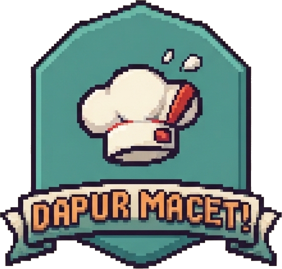

v1.0.5 • Warung Sedap
Dapur Macet!
Game simulasi edukatif yang menggabungkan keseruan manajemen dapur dengan konsep penyelesaian masalah deadlock pada Sistem Operasi. Kamu akan berperan sebagai Kepala Dapur yang bertugas mengatur pembagian alat masak (sumber daya) kepada para koki (proses) agar pesanan selesai tepat waktu.
↻ Putar HP ke mode landscape agar lebih besar
Analisis Deadlock
Koki A memegang Wajan dan menunggu Kompor. Koki B memegang Kompor dan menunggu Wajan. Tidak ada yang mau melepas, jadi keduanya menunggu selamanya: itulah deadlock.
↻ Putar HP ke mode landscape agar lebih besar
Analisis Deadlock
Koki A memegang Wajan dan menunggu Kompor milik B. B memegang Kompor dan menunggu Panci milik C. C memegang Panci dan menunggu Wajan milik A. Rantai tunggu melingkar ini disebut circular wait: itulah deadlock.